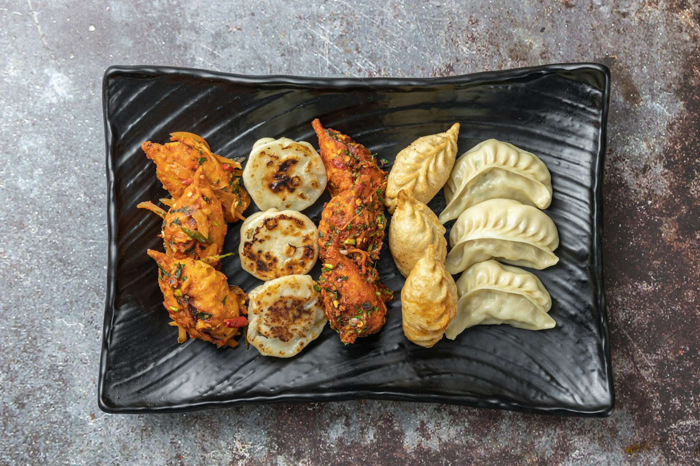

Guest favourite
Spinach Momos
Момо со шпинатом
₹240
Guests keep praising these. Emerald dumplings, generous in size, filled with spinach and soft cheese and steamed until silky. Served with a punchy red chilli dip that wakes everything up.
🛵 Travels well: packed to arrive hot and intact.
What goes in
Allergen information
Best paired with
Tender coconut or iced tea
Free delivery over ₹1000, ₹50 below within our local zone. Distance-based fee confirmed on chat for farther addresses. Photo is illustrative.